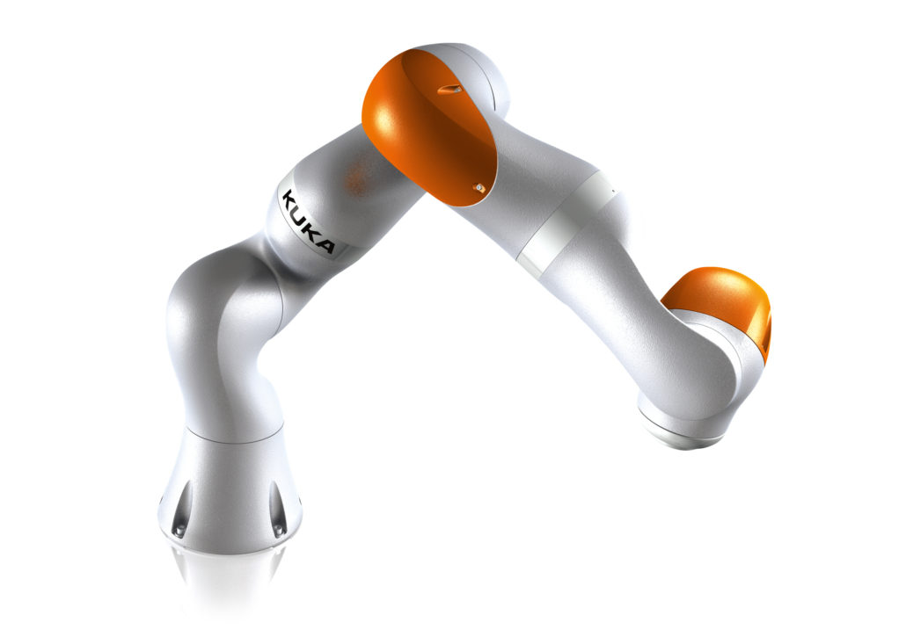
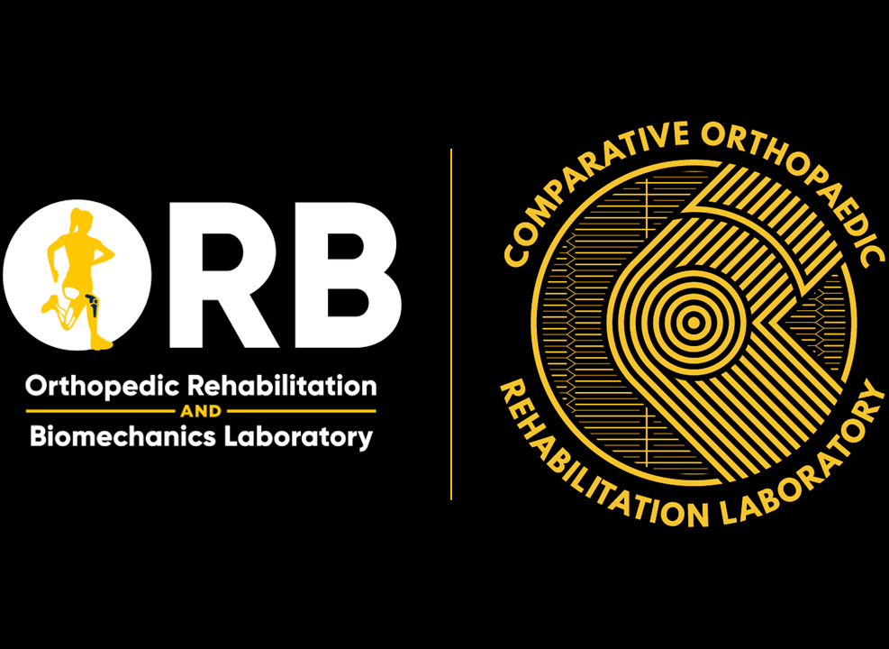
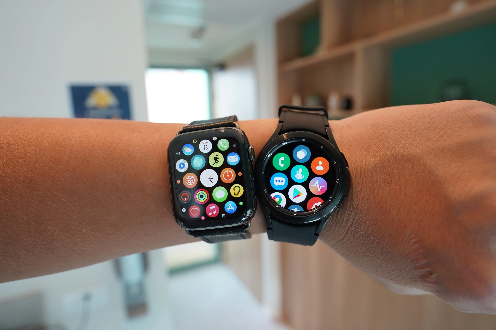
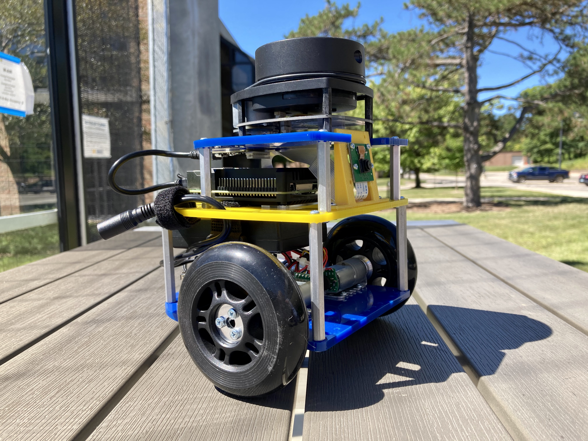
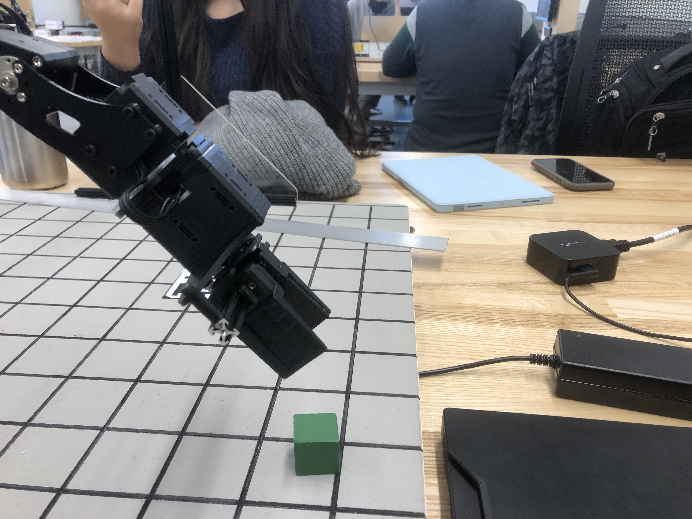
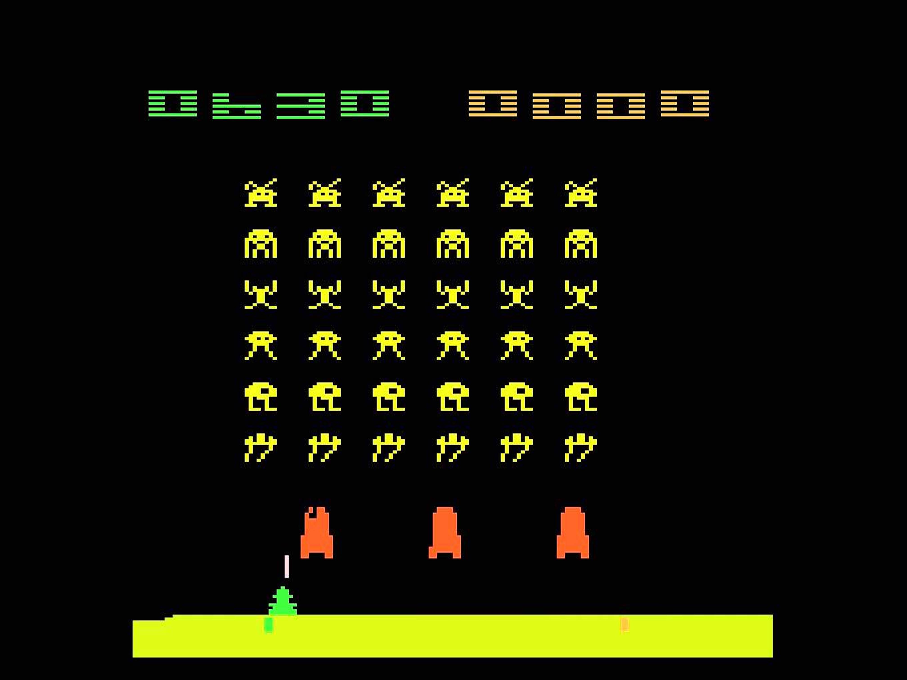

AI · ML · Robotics · ADAS
Sr. ML Software Engineer
Building production ML systems for autonomous vehicles, wearable sensing, and embodied robotics. Currently at Subaru of America — ADAS Research Division.
Expertise
Modeling & Evaluation
Frameworks & Tools
Distributed & Data
Programming
Career
Academic Work

M.S. Research · UMich
Real-time communication between a vision sensor robot and a dexterous KUKA robot — estimating end-effector pose in world frame using deep learning belief maps and classical OpenCV geometry.
Read More
CORL Lab · UMich Kinesiology
Automated real-time joint mapping in walking animal videos using a transformer-based deep network — detecting and plotting hip, knee, and ankle key points for orthopedic rehabilitation research.
Read More
Published · ACSM 2024
LSTM model achieving 99.7% accuracy automating VO2max ventilatory threshold detection — VT1 at 92%, VT2 at 97% precision. Published in Medicine & Science in Sports & Exercise.
Read MorePersonal & Course Work

Mobile Robotics Course
Implemented path-planning and SLAM algorithms in C++ enabling a mobile robot to navigate unknown environments autonomously.
Read More
Armlab · Robotics Systems Lab
Applied forward/inverse kinematics and computer vision to enable a 5-DOF arm to autonomously locate, grasp, and stack objects of varying dimensions.
Read More
ML Course · Deep RL
Applied DQN and policy gradient methods to train agents to achieve superhuman performance on Atari game environments.
Read MorePeer-Reviewed Work
Medicine and Science in Sports & Exercise (ACSM) · Volume 56, Issue 8
JoVE Journal
DOI: 10.3791/66744American Physical Therapy Association (APTA) · CSM 2024 Poster
View PosterLet's Connect
Open to senior ML engineering and AI research roles, especially in ADAS, computer vision, and embodied robotics. Feel free to reach out for collaborations, opportunities, or just to talk about autonomous systems.